Evan Peairs

Hello!
You've reached my website. Most people seem to use this site to initiate conversations about bells. I also like caves, puzzles, and oversized books. Please send emails about these things as well.
Requests for Collaborators
A few of my projects are woefully short staffed. Get in touch if any of these sound fun.
Escape Room: I'm designing an escape room-esque puzzle experience centered mostly around optics phenomena. The initial setting will have no illumination, and unlocking new sources of light will be a central mechanic. I'm aiming for a difficulty a little easier than the average Galactic Puzzle Hunt.
California Cave Survey: I'm a founding member of California's first project to catalog and manage cave data for research and exploration. At this stage we need volunteers to help with software development in particular.
Horrifying Rappel Device: The backcountry canyoneering community has been pushing the limits of lightweight ropes with 22g/m, 6mm dyneema PUR line. Right now the limiting factor isn't total strength, but heat dissipation in the rope. I'm working on ideas for a rappel device which doesn't use rope friction to dissipate your potential energy, which would remove this constraint and allow for some truly deranged rope selections.
Past Projects
Gainful Employment
I worked as an electrical engineer at Joby Aero for a number of years,
mostly designing the pilot controls and flight instrumentation.
Prior to that I was a research engineer at Otherlab.
I also operated a nuclear reactor for a few years!
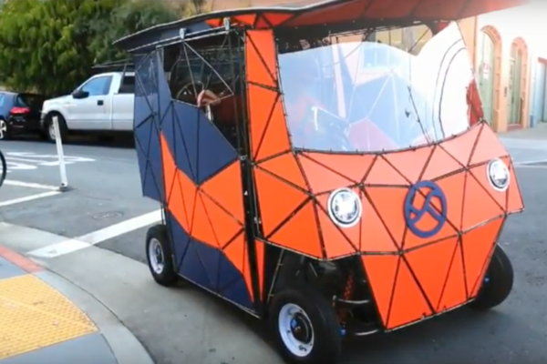 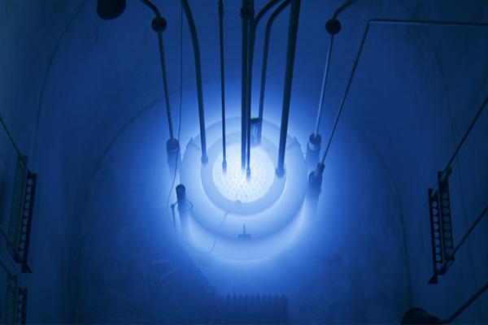
Thesis
For my undergrad thesis I came up with a new way of designing flat plate bells which made it easy to tune their overtones. The bells were designed by simulating their vibration and then optimizing the boundary shapes to match the sound. Here's the code if you want to reproduce it, and you can check out my seminar presentation, or an article, or an interview.
I also built a electronic speckle pattern interferometer to check its vibration modes against the simulation.
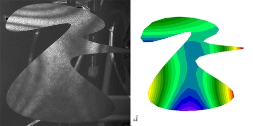
Here's the outline of a bell converging to its target
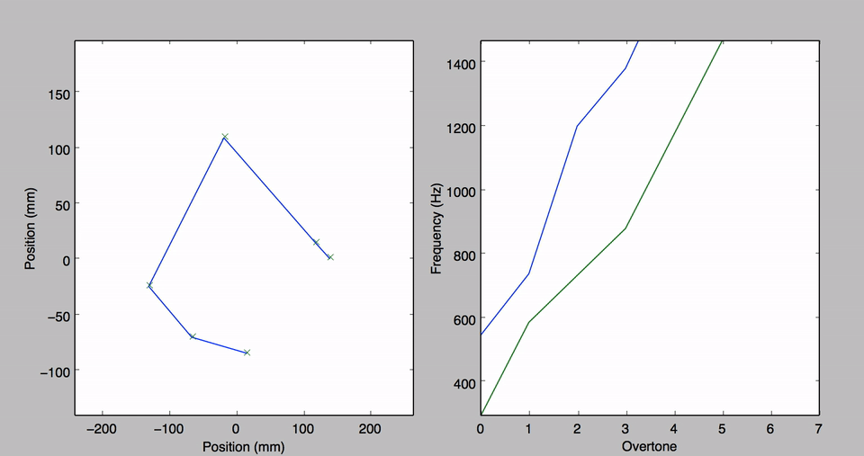
Ropework
Much of my free time goes to exploring caves and canyons. For example, here's a blog post with me in it. Below are some pictures of places I was instrumental in discovering. Invite me on your expedition!
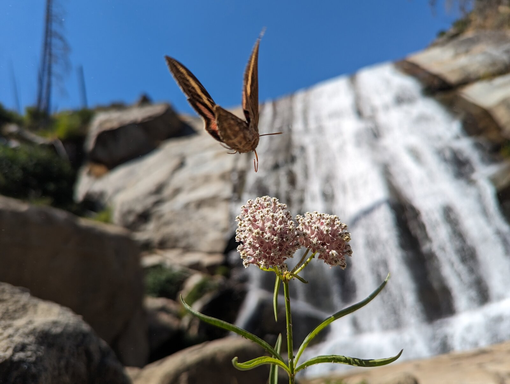


Maps
I am fond of good interactive maps. Nowhere near href.cool levels of original, but here's my contribution to hyperlinking.
Show me the maps
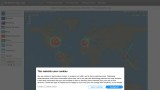
Blitzortung- Radiooooo
- EIA Real-time Operating Grid
- electricityMap
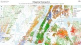
Mapping Segregation- The globe of economic complexity
- Planet
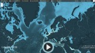
Shipmap- Draw all roads in a city at once
 Macrostrat
Macrostrat- open infrastructure map
- Mammals
- The Huell Mapp!
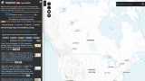
NGMDB mapView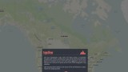
topoView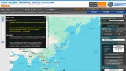
JAXA Global Rainfall Watch- Surfacing: Mauritius
- NEIS Data Visualization
 DeepZoom Nautical Charts
DeepZoom Nautical Charts- MarineTraffic
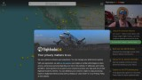
Flightradar24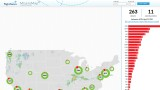
FlightAware MiseryMap- Tabletop Whale
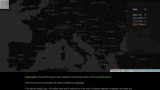
Cell Tower Distribution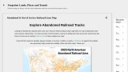
Abandoned Railroad Corridors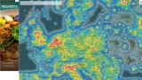
Light pollution map- XC Skies
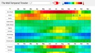
Well-Tempered Traveler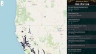
California Abandoned Rails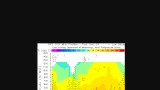
fort ord profile- ORBIS
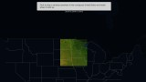
River Runner- what3words
- Submarine Cables Globe
- Probable Futures
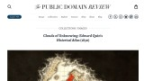
Clouds of Unknowing: Edward Quin's *Historical Atlas* (1830)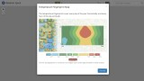
Weather Spark- DarkSiteFinder
- Pantheon
- Global Sequencer
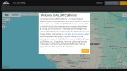
ALERT Wildfire: Eagle Rock Lookout- Radiooooo
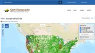
OpenTopography- Radio Garden
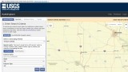
EarthExplorer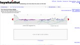
HeyWhatsThat- electricityMap
- FlyXc
- Thermal Springs in the U.S.
- NCEI Maps
- the Degree Confluence Project
- Felt
- Who Was Alive?
- World Imagery Wayback
- Notable people
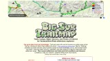
Big Sur Trailmap- Chronotrains
- The Social Capital Atlas
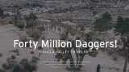
Forty Million Daggers!- National Rail Network Map
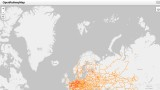
OpenRailwayMap- America
- realtime.info
- Bird Migration Explorer
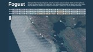
Fogust- OneZoom
- The Color of US Rivers
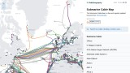
Submarine Cable Map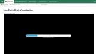
LeoLabs- WiGLE
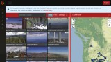
ALERT Wildfire- Astronaut
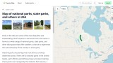
National Parks Map- The Map of the Universe
- NASA SEDAC Population Estimator
- Wonders of Street View
- The National Map
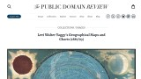
Levi Walter Yaggy's Geographical Maps and Charts (1887/93)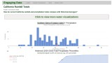
California Rainfall Totals- National Water Dashboard
- Hatnote Listen to Wikipedia
- Natural Flows Database
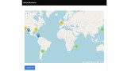
Niche Museums- USGS Lidar Explorer
- geospatial-wheels
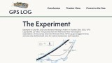
GPS Log Drive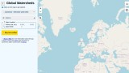
Global Watersheds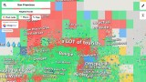
San Francisco Neighborhood Map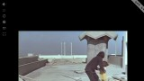
EXP TV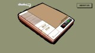
After The Tone- Electricity Maps
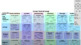
Interactive map of Linux kernel- amtrak explorer
- Native Land
- Mini Tokyo 3D
- GPSJam
- MapsFM
- NYC Neighborhood Map
- Snap Map
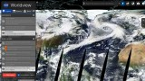
EOSDIS Worldview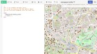
overpass turbo- Planetary Computer
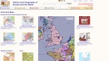
History and Geography of Europe- Grottocenter
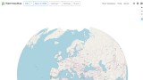
WaterwayMap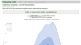
California Snowpack Levels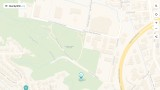
Evergreen Cemetery (Santa Cruz, California)- Geologic Map of California
- The Complete Review
- Archaeological Atlas of Antiquity
- ADS-B Massive Visualizer
 Airborne geophysical surveys
Airborne geophysical surveys- Calculating Empires
- Wikimap
- Taconomical
- Waypoint
- Best affordable warm places to live in the US
- Allmaps Here
- DOC Maps
 Geology of the Grand Canyon
Geology of the Grand Canyon- iOverlander
- Mercator: Extreme
- SunsetWx
- Falling Fruit
- earth
- Cooperative National Geologic Map
- ADS-B Massive Visualizer
 Hot Springs
Hot Springs
{kind=link}
Bikes
Pictures of bikes I welded out of abandoned frames, presented without comment